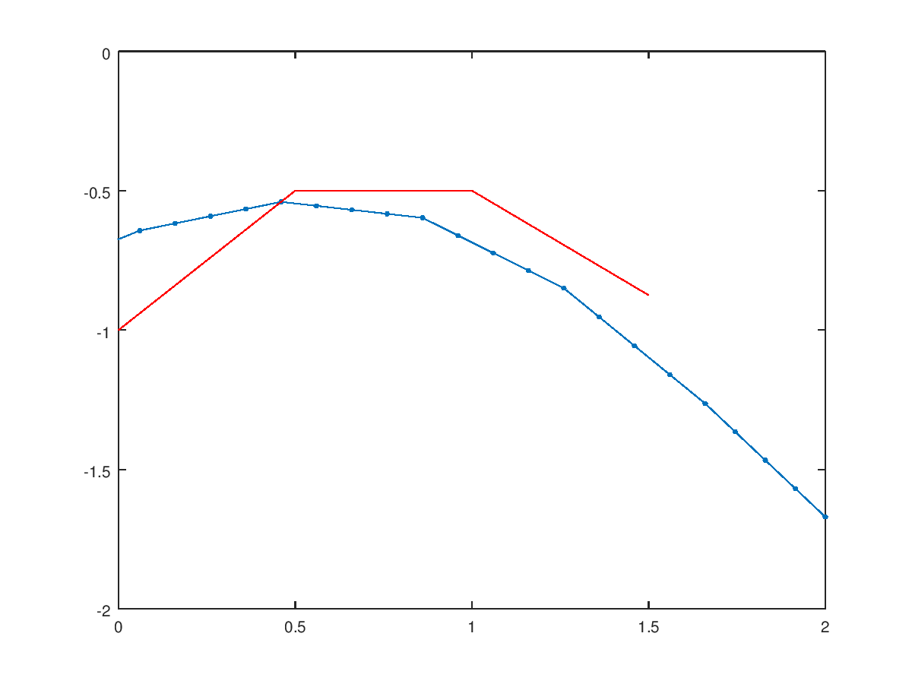

$$$\require{cancel}$$$
| n | $$$x_n$$$ | $$$y_n$$$ | $$$f(x_n, y_n)$$$ | $$$hf(x_n, y_n)$$$ |
|---|---|---|---|---|
| 0 | 0 | -1 | 1 | 0.5 |
| 1 | 0.5 | -0.5 | 0 | 0 |
| 2 | 1 | -0.5 | -0.75 | -0.375 |
| 3 | 1.5 | -0.875 | 0 | 0 |

To figure this out we can find out the double derivative at the target value of $$$x=1.5$$$.
$$y'' = (y^2 - x^2)'$$ $$y'' = 2y' - 2x$$ $$y'' = 2(y^2-x^2) - 2x$$ $$y'' = 2y^2 - x^2 - 2x$$ $$y'' = 2y^2 - (1.5)^2 - 2(1.5)$$
We can see that the second derivative is negative, indicating that the curve is concave-down, and therefore the euler's approximation going to be too large. This is confirmed by the image from problem (1) where we can see that the red line (euler's approximation) is above the approximated solution curve for the given differential equation.
Equation: $${d\over dt}x(t) = r\left(c - {x(t)\over V}\right)$$ In standard form: $$\bbox[5px, border:2px solid black] {{d\over dt}x(t) + {r\over V}x(t) = rc}$$ Checking this via dimensional reduction: $${\text{gram}\over \text{minute}} = {\text{liter}\over \text{minute}}\left({\text{gram}\over \text{liter}}-{\text{gram}\over \text{liter}}\right)$$ $${\text{gram}\over \text{minute}} = {\cancel{\text{liter}}\over \text{minute}}\cdot{\text{gram}\over \cancel{\text{liter}}}$$ $${\text{gram}\over \text{minute}} = {\text{gram}\over \text{minute}} \ \checkmark$$
Givens: $$V = 1,\ r = 2,\ x(0) = 0$$ From (3): $${d\over dt}x(t) + {r\over V}x(t) = rc$$ $${d\over dt}x(t) + {2\over 1}x(t) = 2c$$ Notice that the method of integrating factors can be applied here: $${d\over dt}x(t)a(t) + 2x(t)a(t) = 2ca(t)$$ If we pick $$$2a(t) = {d\over dt}a(t)$$$, we can write the LHS as $$${d\over dt}\left(x(t)\cdot a(t)\right)$$$. $$2a(t) = {d\over dt}a(t)$$ Separate variables: $$\int {1\over a(t)} da(t) = \int 2\ dt$$ $$ln(a(t)) = 2t + C_1$$ $$a(t) = C_2e^{2t}$$ We can drop the C as we are using this as an integrating factor. Multiplying over the differential equation we have: $${d\over dt}x(t)e^{2t} + 2x(t)e^{2t} = 2ce^{2t}$$ $${d\over dt}\left(x(t)e^{2t}\right) = 2ce^{2t}$$ $$\int {d\over dt}\left(x(t)e^{2t}\right)\ dt = \int 2ce^{2t}\ dt$$ $$x(t)e^{2t} = ce^{2t} + C$$ $$x(t) = c + Ce^{-2t}$$ Using the initial condition of x(0) = 0: $$0 = c + Ce^{0}$$ $$-c = C$$ Plugging this back into the solution: $$x(t) = c + -ce^{-2t}$$ $$\bbox[5px, border:2px solid black] {x(t) = c(1-e^{-2t})}$$
The limiting amount of salt in the tank is $$$c$$$ which makes sense, as the maximum concentration of salt cannot exceed the concentration of the salt entering the tank.
To figure out when the tank will contain half this amount, the equation for $$$x(t)$$$ can be solved for $$$x(t) = {c\over 2}$$$: $${c\over 2} = c(1-e^{-2t})$$ $${1\over 2} = (1-e^{-2t})$$ $$-{1\over 2} = -e^{-2t}$$ $${1\over 2} = e^{-2t}$$ $$ln({1\over 2}) = -2t$$ $$\bbox[5px, border:2px solid black] {t=-{1\over 2}ln({1\over 2})}$$ $$\bbox[5px, border:2px solid black] {t\approx 0.3466\ \text{minutes}}$$
Representing the amount of salt in the second tank as $$$y(t)$$$: $${d\over dt}y(t) = r\left({x(t)\over V}-{y(t)\over V}\right)$$ In english: the rate of change of salt in the second tank is the concentration of salt flowing out of the first tank minus the concentration of salt flowing out of the second tank multiplied by the flow rate.
Plugging in $$$x(t)$$$ from $$$(4)$$$, and using the initial conditions of $$$ V=1,\ y(1) = 0 $$$:
$$\bbox[5px, border:2px solid black] { {d\over dt}y(t) = 2\left({c(1-e^{-2t})-y(t)}\right)}$$
$$R{d\over dt}I(t) + {1\over C}I(t) = {d\over dt}V(t)$$ Since $$$V(t)$$$ is constant, $$${d\over dt}V(t)$$$ is 0: $$R{d\over dt}I(t) + {1\over C}I(t) = 0 $$ $$R{d\over dt}I(t) = -{1\over C}I(t)$$ $${d\over dt}I(t) = -{1\over RC}I(t)$$ We can solve this differential equation for $$$I(t)$$$: $$\int {1\over I(t)}\ dI(t) = \int -{1\over RC}\ dt$$ $$ln(I(t)) = -{t\over RC} + K_1$$ $$I(t) = Ke^{-{t\over RC}}$$ With initial condition $$$I(0) = I_0$$$: $$I(0) = Ke^0$$ $$I(0) = K$$ $$\therefore I_0 = I(0) = K$$ $$\bbox[5px, border:2px solid black]{I(t) = I_0e^{-{t\over RC}}}$$ $$\bbox[5px, border:2px solid black]{c = I_0, \tau=RC}$$ $$I(t + \tau) = I_0e^{-{t + \tau\over RC}}$$ $$I(t + \tau) = I_0e^{-{t\over RC}}e^{-{\tau\over RC}}$$ $$I(t + \tau) = I(t)e^{-{\tau \over RC}}$$ $$I(t + \tau) = I(t)e^{-{RC \over RC}}$$ $$\bbox[5px, border:2px solid black]{I(t + \tau) = I(t)e^{-1}}$$